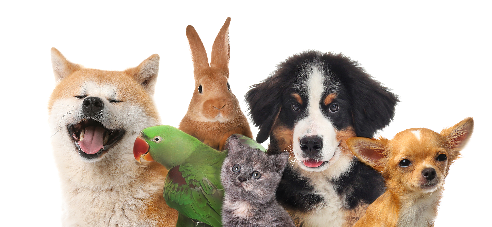

About TBA
The Better Animal Association (TBA) is a non-profit shelter dedicated to giving every animal a second chance at life. Located in Portsmouth, we specialize in caring for dogs, cats, and small animals — including those with special needs.
Our mission is to provide a safe, loving environment for homeless and abandoned animals while working tirelessly to find them forever homes. Our staff and volunteers believe every animal matters, no matter their age, breed, or background.
Want to help out? You can adopt, volunteer, or donate to support our cause. Thank you for believing in better!
Contact Us
- tba@tba.local
- (XXX) XXX - XXXX
- 240 Second Second Street, Portsmouth OH, 45662